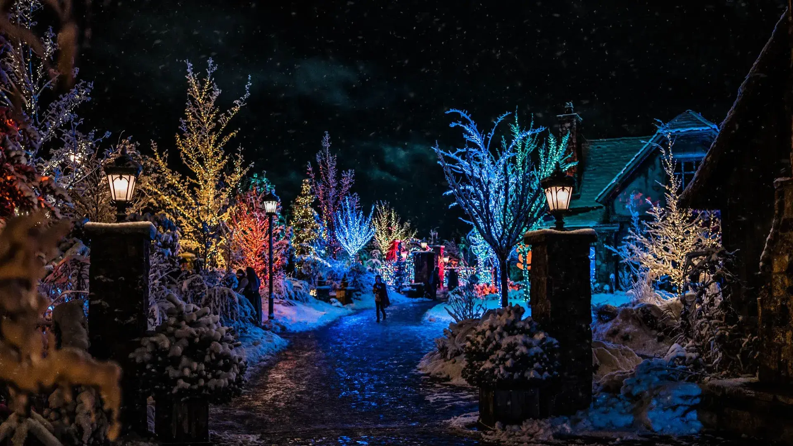
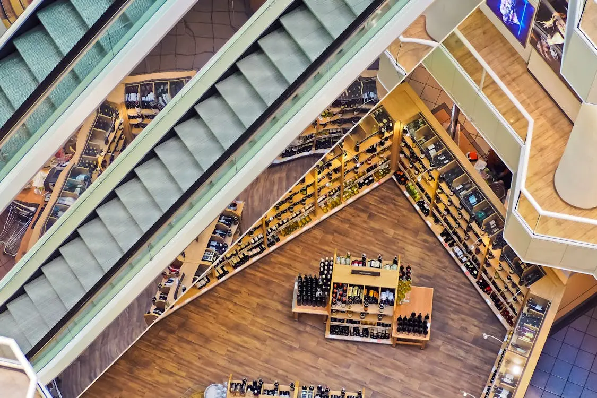
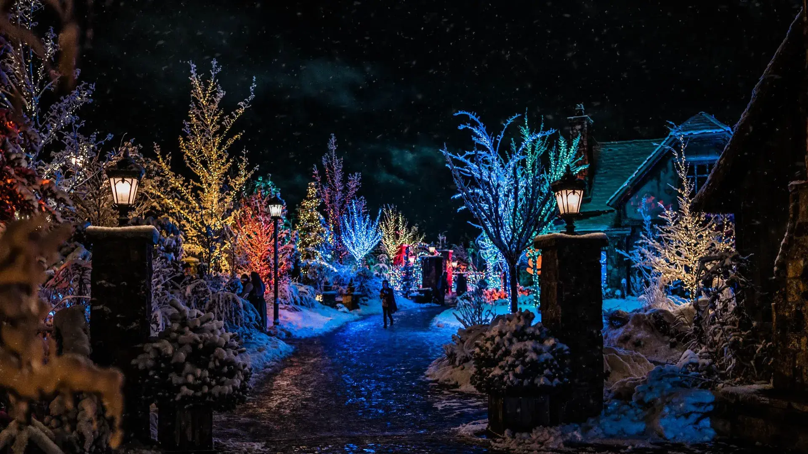
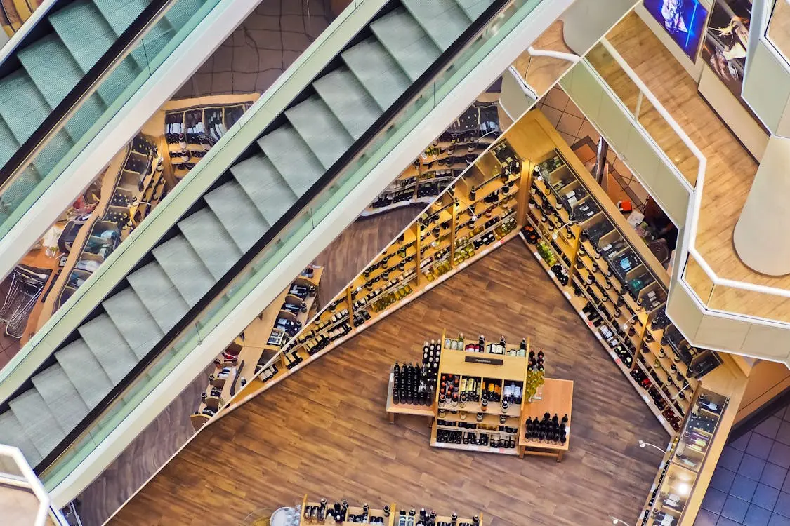

Pleasant Grove, known for its friendly community,
has a population of around 38,000 residents. The median
age is 31 years, with a diverse mix of families,
young professionals, and retirees.
Statistical Data
The median household income in Pleasant Grove is $80,000, and the unemployment rate is 3.5%. The city
boasts a high rate of home ownership at 72%.
Events
Strawberry Days Festival: June 16-19
Summer Concert Series: Every Friday in July
Farmers Market: Saturdays, May-October
Attractions
Evermore Park: An immersive experience with live performances and themed
adventures.
Battle Creek Falls: A popular hiking destination with a beautiful waterfall.
Discovery Park: A large playground and park, perfect for families.
 


